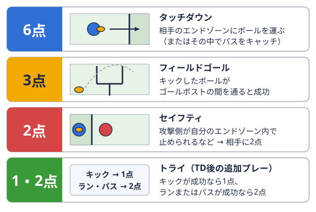

データ 2026-11-18
大学アメフトのQB 2026｜関東TOP8各校の主戦QBとパス成績を公式記録で比較
関東の大学アメフトでQB攻撃の司令塔。作戦に合わせて、パスを投げたり、走る選手にボールを渡したりする。 用語辞典で見るを調べている方に向けて、2026年度の関東学生アメリカンフットボール連盟（KCFA）TOP8に出場した各校のQBを、公式の個人記録で整理します。パスの試投数や獲得ヤード距離の単位で、1ヤードは約0.9メートル。フィールドには5ヤードごとに線が引かれている。
用語辞典で見るを調べている方に向けて、2026年度の関東学生アメリカンフットボール連盟（KCFA）TOP8に出場した各校のQBを、公式の個人記録で整理します。パスの試投数や獲得ヤード距離の単位で、1ヤードは約0.9メートル。フィールドには5ヤードごとに線が引かれている。 用語辞典で見る、QBレーティング、さらにQBが走った記録まで、同じ基準の数字で並べて見比べられるようにしました。
用語辞典で見る、QBレーティング、さらにQBが走った記録まで、同じ基準の数字で並べて見比べられるようにしました。
この記事で扱うのは、関東学生連盟（KCFA）のTOP8だけです。関西学生連盟やBIG8の個人記録はこの記事では扱いません。
また、個人記録は第6節終了時点の数字です。最終節（第7節・11月14〜15日）の成績は個人記録に含まれていません。一方で、チームの最終順位は第7節までの7試合を反映したものを載せています。個人記録とチーム成績で時点が異なる点に注意して読んでください。
この記事の見方（データの出典と時点）
使った情報はすべてKCFA公式サイトの公開情報、またはそれをもとにした本サイトの順位表です。
- パス記録: KCFA「2026年度 個人記録 パス」TOP8（第6節）
- ラン記録: KCFA「2026年度 個人記録 ラン」TOP8（第6節）。POSにQBを含む選手を抜き出しています
- MVP: KCFAお知らせ「リーグ戦MVPに法政大学のQB菊地慶選手」（2026年11月15日）
- 最終順位: 本サイトの順位表（出典はKCFA星取表リーグ戦の全チームの勝敗を、対戦相手ごとに○と●で表にしたもの。用語辞典で見る、7試合）
個人記録の表には、選手名、学年、試投数、成功数などを載せています。順位は各記録のランキング上の順位で、チームの勝敗とは別のものです。リンク先は記事の最後にまとめています。
QBレーティングとは（KCFAの算出式）
KCFAのパス記録PDFには、RATING POINT（QBレーティング）の算出式が次のように記載されています。
パス成功率＋（パス平均獲得ヤード×8.4）＋（タッチダウンボールを持って相手のエンドゾーンに入る、またはその中でパスをキャッチして得る6点の得点。 
各項の意味は次のとおりです。
- パス成功率: 投げたパスのうち、味方が捕れた割合です
- パス平均獲得ヤード: 1回のパスで進んだヤード数の平均です
- タッチダウン率: 投げたパスのうち、タッチダウンになった割合です
- 被インターセプト率: 投げたパスのうち、相手に奪われた割合です
例として、中央大・小野一真選手の数字を当てはめてみます。以下は公式記録の試投132、成功率69.7、獲得1,114ヤード、TD11、INT3から、本記事で計算した値です。
- パス成功率は記録上69.7
- 1試投あたりの平均は1,114÷132で約8.4ヤード
- タッチダウン率は11÷132で約8.3%
- 被インターセプト率は3÷132で約2.3%
これらを式に入れると公式記録の163.5とほぼ同じ値になります。成功率、距離、得点、ミスの4要素を一つの数字にまとめた指標です。ただし、レーティングだけでQBの優劣が決まるわけではありません。試投数の違いや、チームの攻撃スタイル、QB自身が走る場面なども試合の結果に関わります。この記事では、あくまで公式記録で比較できる範囲を示します。
2026年度TOP8 QBレーティング順位（第6節）
KCFAの個人記録のうち、試投数が1試合あたり10回以上のQBが対象の「QBレーティング順」です。第6節終了時点の7人を示します。
| 順位 | 大学 | 選手 | 学年 | 試投 | 成功 | INT | YDS | TD | LONG | 成功率 | RATING |
|---|---|---|---|---|---|---|---|---|---|---|---|
| 1 | 中央大 | 小野一真 | 3年 | 132 | 92 | 3 | 1114 | 11 | 66 | 69.7 | 163.5 |
| 2 | 立教大 | 中川龍之介 | 2年 | 131 | 75 | 1 | 1281 | 10 | 99 | 57.3 | 163.1 |
| 3 | 法政大 | 菊地慶 | 4年 | 89 | 57 | 2 | 669 | 8 | 46 | 64.0 | 152.4 |
| 4 | 明治大 | 関根那瑠 | 2年 | 129 | 76 | 3 | 824 | 5 | 48 | 58.9 | 120.7 |
| 5 | 日体大 | 石川竜之介 | 3年 | 159 | 90 | 7 | 989 | 6 | 75 | 56.6 | 112.5 |
| 6 | 東京大 | 田中昂 | 4年 | 79 | 39 | 5 | 367 | 2 | 56 | 49.4 | 84.1 |
| 7 | 慶應大 | 滝沢徹 | 3年 | 111 | 50 | 6 | 481 | 4 | 47 | 45.0 | 82.5 |
※第6節終了時点。最終節（第7節）の成績は含みません。
表から数字で言えることを整理します。
- 1位の中央大・小野選手（163.5）と2位の立教大・中川選手（163.1）の差は0.4で、ほぼ並んでいます
- 立教大・中川選手はパス獲得1,281ヤードで、この表で最も多い数字です。LONG（最長パス）も99ヤードと最も長くなっています
- 中央大・小野選手は成功率69.7と、この表で最も高い成功率です。TDは11で最多です
- 立教大・中川選手のINTは131試投で1回と、この表で最少です
- 日体大・石川選手は試投159で最多、INTも7で最多です。獲得ヤードは989でした
- 法政大・菊地選手は試投89と、上位3人の中では少ない試投数ながら、レーティングは152.4で3位です
早稲田は複数のQBが出場
先ほどの表に早稲田大の名前がないのは、早稲田に「試投数が1試合あたり10回以上」の基準を満たすQBがいないためです。つまり、複数のQBがパスを投げています。理由は記録からはわかりません。
試投数が基準に満たない選手は、別表（成功数順）に載っています。ここから早稲田と、いくつかの大学の選手を抜粋します。
| 大学 | 選手 | 学年 | 試投 | 成功 | INT | YDS | TD | LONG | 成功率 | RATING |
|---|---|---|---|---|---|---|---|---|---|---|
| 早稲田 | 岩井麟 | 1年 | 44 | 25 | 2 | 129 | 1 | 12 | 56.8 | 79.9 |
| 早稲田 | 木庭修克 | 3年 | 27 | 20 | 0 | 209 | 0 | 33 | 74.1 | 139.1 |
| 法政大 | 田邊悠人 | 1年 | 35 | 19 | 1 | 172 | 0 | 38 | 54.3 | 89.9 |
| 早稲田 | 道浦佑太郎 | 4年 | 27 | 17 | 2 | 225 | 2 | 38 | 63.0 | 142.6 |
| 中央大 | 畑尾櫂 | 3年 | 10 | 7 | 1 | 76 | 0 | 25 | 70.0 | 113.8 |
※第6節終了時点。成功数順の表からの抜粋です。
早稲田の3人は、試投が44、27、27と分かれています。なお、同じ第6節のラン記録では、全体1位が早稲田のRBQBからボールを受け取って走り、陣地を進める選手。足の速さと当たり負けしない強さが求められる。用語辞典で見る長内一航選手（4年）で、82回791ヤード11TDです。早稲田の攻撃を見るときは、QBのパス記録だけでなく、RBのラン記録もあわせて確認すると全体像をつかみやすくなります。
走るQBもいる（QBのラン記録）
QBはパスだけでなく、自分でボールを持って走ることもあります。KCFAのラン記録から、POSにQBを含む選手を抜き出しました。
| ラン順位 | 大学 | 選手 | 学年 | POS | 回数 | YDS | 平均 | TD | LONG |
|---|---|---|---|---|---|---|---|---|---|
| 2 | 中央大 | 小野一真 | 3年 | QB/WRフィールドの外側に広がり、投げられたパスをキャッチして陣地を進める選手。用語辞典で見る | 69 | 664 | 9.6 | 8 | 65 |
| 6 | 東京大 | 田中昂 | 4年 | QB/P | 105 | 475 | 4.5 | 5 | 19 |
| 16 | 明治大 | 田中香大 | 1年 | QB | 21 | 173 | 8.2 | 0 | 31 |
| 20 | 法政大 | 菊地慶 | 4年 | QB | 35 | 139 | 4.0 | 0 | 24 |
| 23 | 立教大 | 中川龍之介 | 2年 | QB | 30 | 111 | 3.7 | 1 | 13 |
| 27 | 慶應大 | 滝沢徹 | 3年 | QB | 22 | 75 | 3.4 | 1 | 18 |
| 29 | 早稲田 | 岩井麟 | 1年 | QB | 24 | 60 | 2.5 | 0 | 22 |
| 31 | 早稲田 | 道浦佑太郎 | 4年 | QB | 17 | 54 | 3.2 | 0 | 26 |
| 37 | 早稲田 | 木庭修克 | 3年 | QB | 10 | 35 | 3.5 | 0 | 12 |
| 64 | 日体大 | 石川竜之介 | 3年 | QB | 11 | 1 | 0.1 | 0 | 8 |
| 72 | 明治大 | 関根那瑠 | 2年 | QB | 9 | -28 | -3.1 | 0 | 2 |
※第6節終了時点。
数字で目立つ点を挙げます。
- 中央大・小野選手は、ラン全体で2位の664ヤード、8TDです。パスのTD11と合わせて、パスでもランでも記録が出ています
- 東京大・田中昂選手は105回475ヤード、5TDで、ラン全体6位です。回数はこの表で最多です
- 明治大・田中香大選手（1年）は21回で173ヤード、平均8.2ヤードです
- 明治大・関根選手のようにマイナスの値の選手もいます。理由は記録からはわかりません
ランの記録は走った回数とヤードの合計で、どのような場面で走ったかの内訳は公式記録からは確認できません。
リーグ戦MVPは法政・菊地慶選手
2026年11月15日、KCFAは東京運動記者クラブ・アメリカンフットボール分科会が選出する今シーズンのリーグ戦最優秀選手（MVP）に、法政大学QBの菊地慶選手（4年）が選ばれたと発表しました。KCFAのお知らせには、次のように書かれています。
「リーグ戦最優秀選手は1990年に創設。法政大学からの受賞は2024年のQB谷口雄仁選手（現東京ガス・クリエイターズ）以来2年ぶりで、通算19人目となります。」
法政大学は2年ぶり22回目のリーグ優勝を果たしました。優勝決定はKCFAから10月31日に発表されています。
菊地選手の第6節終了時点のパス記録は、次のとおりです。
- QBレーティング: 152.4（リーグ3位）
- パス: 89試投57成功、成功率64.0
- 獲得ヤード: 669ヤード、TD8、INT2
法政大学の最終成績は7勝0敗（得点173、失点114）でした。MVPは記者クラブの分科会が選出するもので、KCFAの個人記録のランキングとは別の発表です。レーティング1位の選手がそのままMVPになる仕組みではない点は押さえておきましょう。
最終順位と各校のQB
最終順位は、本サイトの順位表（出典はKCFA星取表、7試合）をもとにしています。QBの数字は第6節終了時点です。
1位 法政大学（7勝0敗、得点173・失点114）
QBは菊地慶選手（4年）で、レーティング152.4、成功率64.0です。ほかに1年の田邊悠人選手が35試投19成功、172ヤードの記録を残しています。法政大学のチームページ
2位 立教大学（6勝1敗、得点188・失点107）
中川龍之介選手（2年）が1,281ヤード、INT1、最長99ヤードを記録しています。レーティングは163.1で2位です。立教大学のチームページ
3位 早稲田大学（4勝3敗、得点145・失点125）
岩井麟選手、木庭修克選手、道浦佑太郎選手の3人がパスを投げています。木庭選手は成功率74.1、道浦選手は225ヤードで2TDでした。早稲田大学のチームページ
4位 明治大学（4勝3敗、得点143・失点122）
関根那瑠選手（2年）が129試投76成功、824ヤード、5TDで、レーティングは120.7（4位）です。明治大学のチームページ
5位 中央大学（4勝3敗、得点206・失点202）
小野一真選手（3年）がレーティング163.5で1位、ランも664ヤードを記録しています。得点206は8校で最多ですが、失点も202と多くなっています。中央大学のチームページ
6位 慶應義塾大学（1勝6敗、得点131・失点164）
滝沢徹選手（3年）は111試投50成功、481ヤード、TD4、INT6です。慶應義塾大学のチームページ
7位 東京大学（1勝6敗、得点108・失点187）
田中昂選手（4年）はパスで39成功367ヤードのほか、ランで105回475ヤードを記録しました。東京大学のチームページ
8位 日本体育大学（1勝6敗、得点147・失点220）
石川竜之介選手（3年）は159試投で90成功、989ヤードです。試投数は、第6節時点の個人記録に載っているTOP8のQBの中で最多でした。日本体育大学のチームページ
なお、早稲田・明治・中央は勝ち点リーグ戦の順位を決める点数。関東学生リーグでは、勝ち3点・引き分け1点・負け0点。用語辞典で見る12で並び、順列で決まっています。慶應・東京・日体大も勝ち点3で並んでいます。最終節は11月14日に慶應28-31日体大、立教38-24中央、11月15日に法政24-16東京、早稲田7-13明治でした。
全日本大学選手権に進む3校
KCFAの発表によると、法政大学（10月18日）、立教大学（11月14日）、早稲田大学（11月15日）の3校が全日本大学選手権へ進みます。
出場校の決まり方や、その先の甲子園ボウルについては、次の記事で説明しています。
試合日程や会場は変更されることがあるため、最新の情報はKCFAの発表で確認してください。
本サイトで記録を追う方法
アメフトマニアでは、TOP8の試合結果や記録をまとめています。
QBに必要な能力や練習の考え方は、アメフトQBに必要な5つの能力と練習法で解説しています。記録を見たあとに読むと、数字の背景がイメージしやすくなります。
まとめ
- 関東TOP8の2026年度QBレーティングは、第6節終了時点で中央大・小野一真選手が163.5、立教大・中川龍之介選手が163.1と、0.4差で並んでいます
- 立教大・中川選手は獲得1,281ヤード、最長99ヤードを記録し、日体大・石川選手は試投159、INT7でそれぞれ最多です
- 早稲田は基準を満たすQBがおらず、岩井・木庭・道浦の3選手がパスを投げています
- 中央大・小野選手はランも全体2位の664ヤード、8TDで、東京大・田中昂選手は105回475ヤードを走っています
- リーグ戦MVPは法政大・菊地慶選手で、法政大は7勝0敗で優勝し、法政・立教・早稲田が全日本大学選手権へ進みます
参考リンク
- KCFA 個人記録ページ（2026年度）
- KCFA 個人記録 パス（PDF）
- KCFA 個人記録 ラン（PDF）
- KCFA お知らせ リーグ戦MVPに法政大学のQB菊地慶選手
- KCFA お知らせ 法政優勝決定
- KCFA 星取表（2026年度）
本記事はKCFA公式サイトで公開されている情報をもとに編集部が構成したものです。掲載内容は2026年11月18日時点です。
この部活・競技を応援したい方へ
協賛・応援はこちらから。
取材してほしい部活を募集中
あなたの部活・チームを取材してほしい方はこちらから。
部活を続けながら、就活も進めたい方へ
体育会の学生のための就活相談です。無料で、メールアドレス・学年・所属の入力だけで始められます。